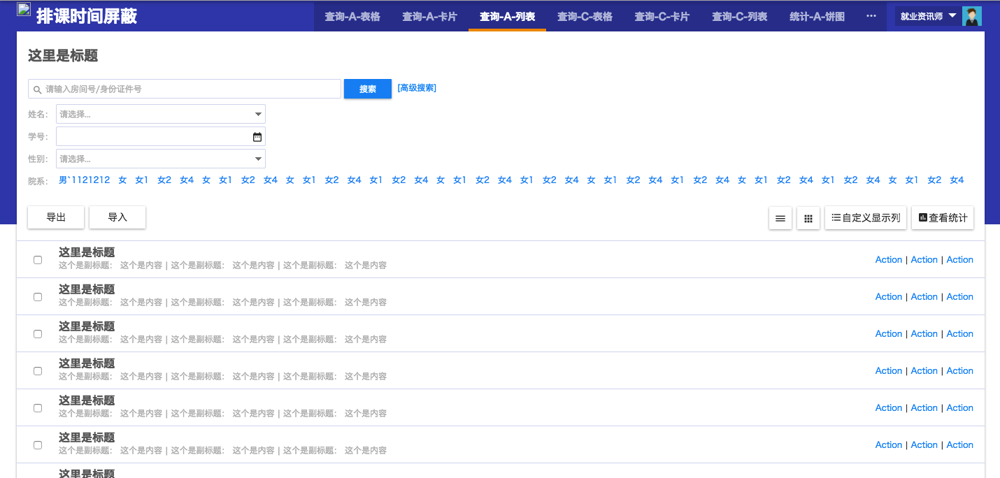
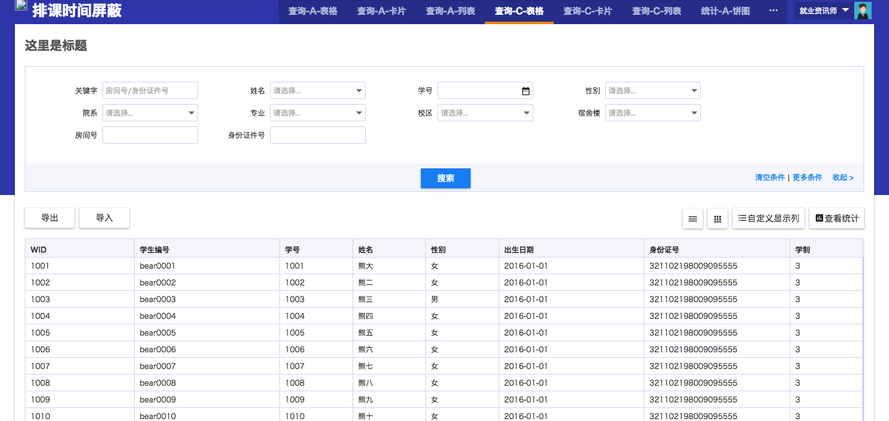
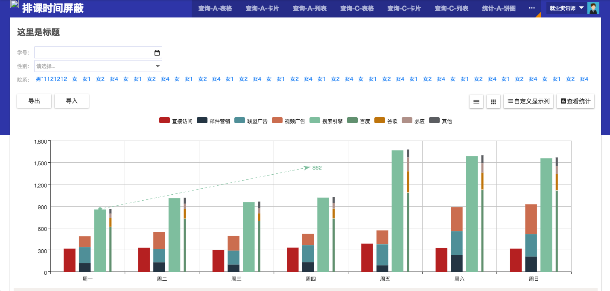
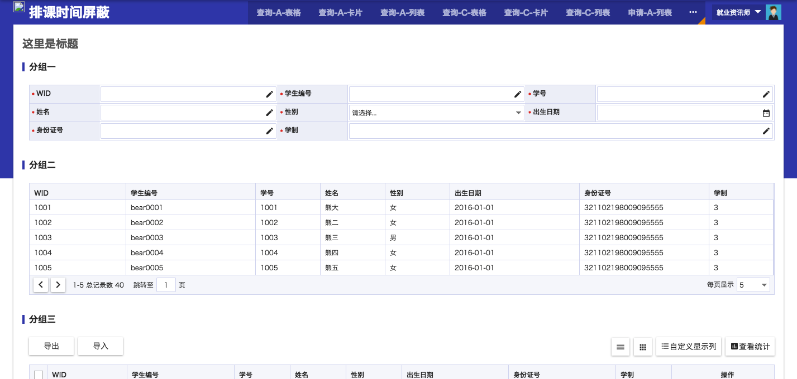

Introduction
PC组件及框架
场景模板页
ubase框架
样式
全局样式
布局
表单
组件
卡片
原子组件
日历
bhAffix-浮动组件
bhCollapse-折叠面板
bhCollapsiblePanel-展开面板
bhCutStr-字符串截断
bhDialog-对话框
flowState-流程提示条
bhFormOutline-大纲列表
bhGallery-幻灯片
bhMenu-左侧菜单栏
bhNumRange-数字区间
pagination-分页
bhProgressBar-进度条
bhSlider-滑动输入条
bhStar-评分组件
bhStepWizard-步骤向导
bhTimePicker-时间范围组件
bhTip-全局提示组件
bhTxtInput-计数文本域
bhWindow-弹窗
Sortable-拖拽排序组件
emapForm
垂直水平表单
表格表单
只读表单
校验
Query
高级搜索
无关键字
条件搜索
高级搜索2
条件构造器
bhVue组件
移动框架与组件
开源项目
实践
开发的规范
css单词断词、换行
css三角形
垂直居中
旋转图标
发布日志
Published with GitBook
场景模板页
场景模板页
查询-A-表格
查询-A-卡片

查询-A-列表

查询-C-表格
申请-A-列表
申请-A-表格详情
查询-C-卡片
查询-C-列表
统计-A-饼图

统计-A-柱状图

申请-E-混合表单
results matching "
"
No results matching "
"
 查询-A-表格
查询-A-表格
 查询-A-卡片
查询-A-卡片
 申请-A-列表
申请-A-列表
 申请-A-表格详情
申请-A-表格详情
 查询-C-列表
查询-C-列表
 统计-A-饼图
统计-A-饼图